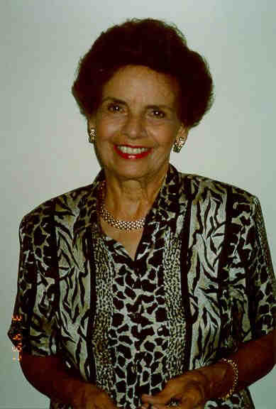
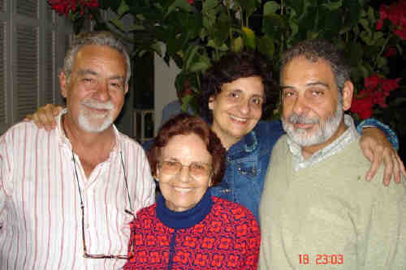
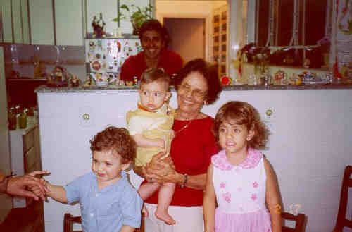
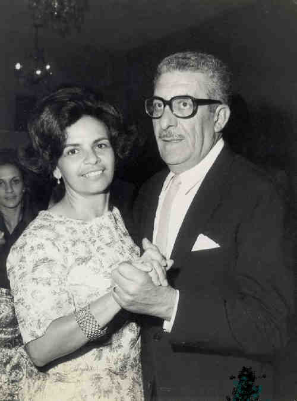
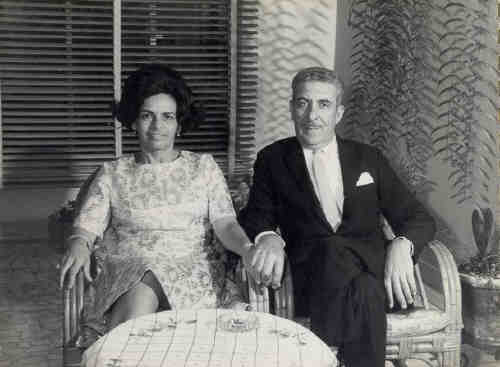
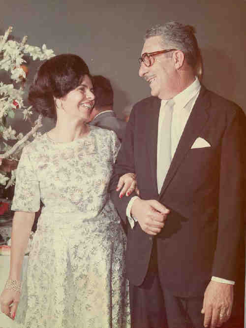
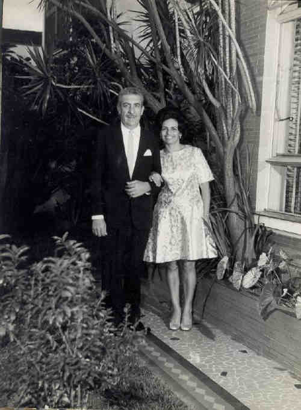
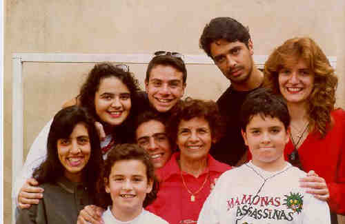

|
|
 Eloisa Banzoli (1926-) |
Eloisa Banzoli

(Clique na Foto para vê-la no Tamanho Original)")
• fotos: Família de Roque Petrella e Eloisa Banzoli. 
(Clique na Foto para vê-la no Tamanho Original)")
• fotos: Eloisa e Roque.  • fotos: Ercole - Eloisa - Pierina - Roque.  • fotos: Eloisa e seus bisnetos.  • fotos: Eloisa e Roque.  • fotos: Eloisa e Roque.  • fotos: Eloisa e Roque.  • fotos: Roque e Eloisa.  • fotos: Eloisa e seus netos. Eloisa casad[:o::a] Roque Petrella, filho de Ercole Petrella e Maria Bonifácio, em 3 Fev 1945. (Roque Petrella nasceu em em 9 Jul 1918 em Rua Do Oratório (Moóca), Sp e faleceu em 23 Abr 1978 em Brooklin - Sp.) |
 Eventos notáveis em Sua vida foram:
Eventos notáveis em Sua vida foram: